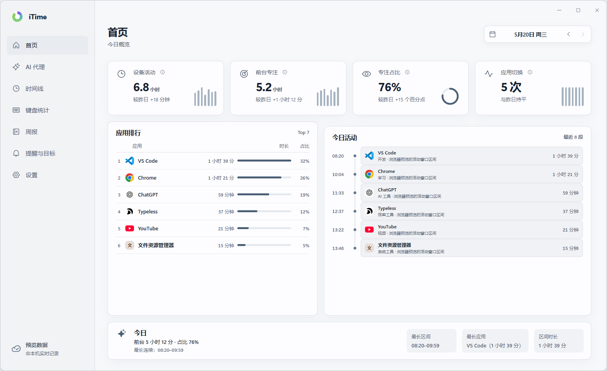
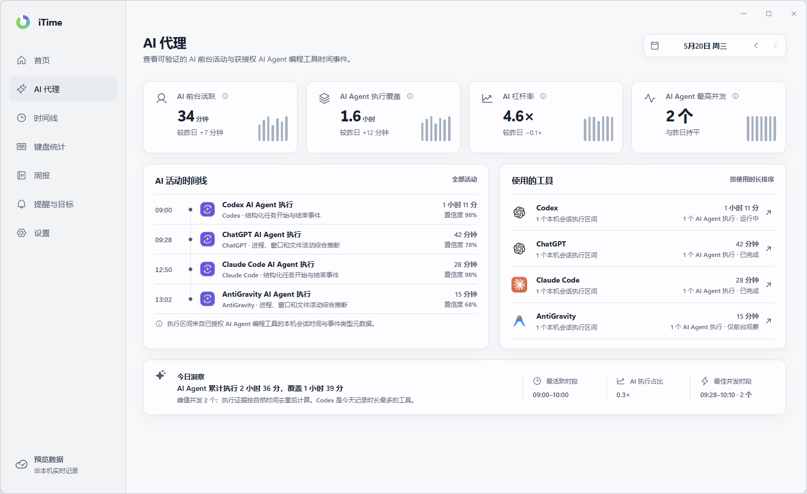
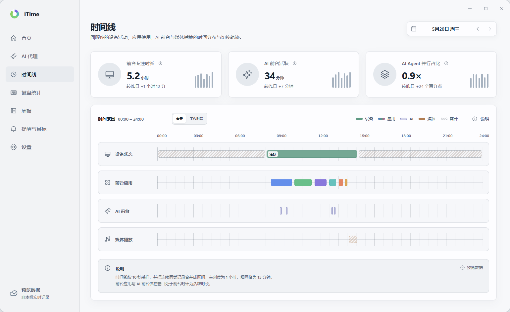
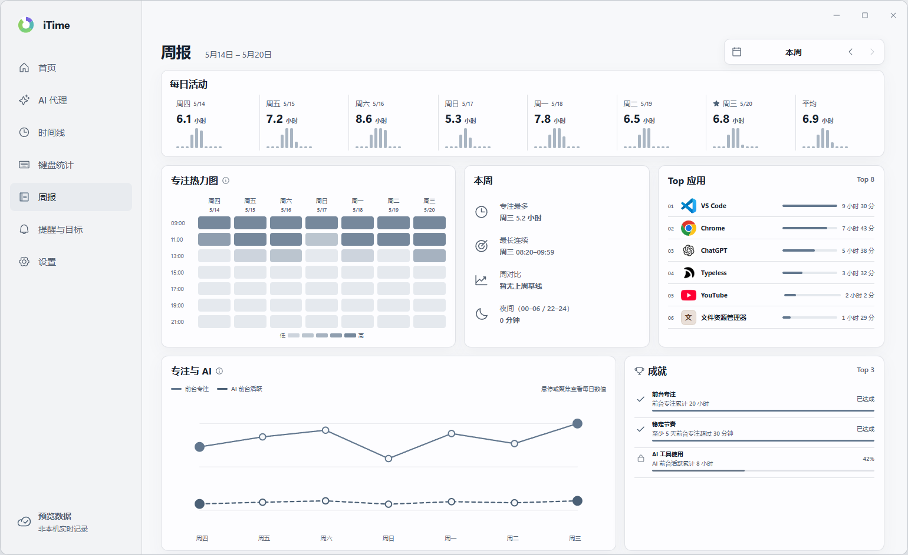
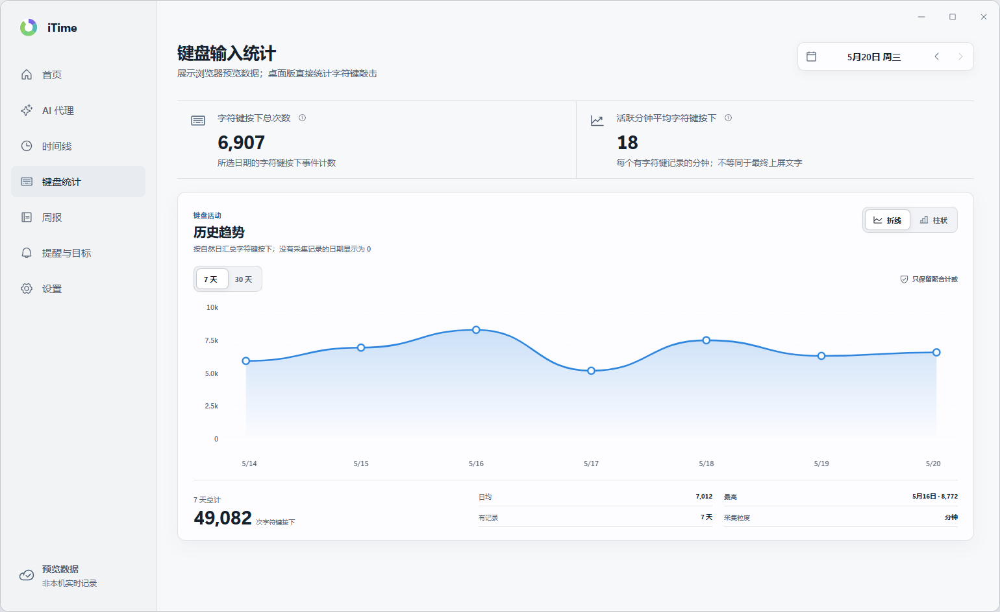

看清屏幕时间
今日概览、应用分布与时间线，一眼知道时间去哪了。从启用后开始采样，不回填安装前的历史。
Windows 桌面 · 本地优先
自动记录前台应用占用，单独标出 AI 工具的前台时间。原始记录只留在本机；匿名设备与性能汇总仅在你明确授权后上传。

一天开了十几个应用，又和 AI 工具来回切换。时间到底花在哪？iTime 帮你在本机看清节奏。
今日概览、应用分布与时间线，一眼知道时间去哪了。从启用后开始采样，不回填安装前的历史。
区分普通应用与 AI 工具的前台占用。无法可靠统计时标为「估算」或「暂无」，不用假数据凑满。
活动、键盘计数和会话原始数据保存在你的电脑上。没有账号云同步；匿名诊断数据只在你打开“AI Agent 编程工具”后上报。
围绕「本机时间记账」展开，而不是被算法推着走。
今日屏幕时间、节奏与重点应用。关键信息一目了然，适合每天打开看一眼。
聚焦 AI 相关工具的前台使用情况。统计的是「该工具是否在前台」，不等于后台 agent 真正跑了多久。
按时间顺序回看切换轨迹，用一周趋势复盘。适合周末快速整理节奏。
直接在本机汇总字符键按下次数与活跃节奏。目标与提醒帮你设定使用边界。
以下截图来自产品演示 / 烟测场景中的示例数据，用于展示界面结构，不代表你本机的真实记录。




iTime 把隐私当成默认选项：原始记录只在本机，匿名设备与性能诊断必须由你明确授权。
完整说明见 仓库 README 隐私章节。 如有疑问欢迎 提交 Issue。
当前发布：正在读取（以 GitHub Release 为准）
完整更新说明以 GitHub Release 页面为准。本站自动核验并展示该正式版本的两个 Windows 资产。
请只从官方 GitHub Releases 获取安装包，避免第三方转载。
推荐
正在读取安装包信息
NSIS 安装包，当前用户模式，一般不需要管理员权限。可进入开始菜单。
便携
正在读取便携版信息
双击即用，适合不想安装的场景。同样只建议从官方 Releases 下载。
下载便携版全部版本与历史资产： github.com/lingcang728/iTime/releases
正在从 GitHub Release 读取版本、大小和校验值。
等待 Release API
等待 Release API
请先等待最新 Release 元数据加载。版本、文件名、大小、下载链接和 SHA-256 均来自 GitHub 最新正式 Release API，不在网页中手工维护。